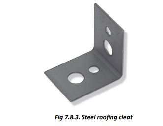

Roofing
There are two types of roofs that are common in Himachal Pradesh:
i. Flat RCC roof
ii. Sloping roofs made of stone patties, metal sheets, etc., supported over wooden or steel framework of trusses, rafters, purlins, etc.
● The materials used in RCC roofing, like cement, sand, steel, and stone aggregate, have been described above.
● For sloping roofs, the steel and wooden framework has also been discussed under their respective heads.
The final covering for sloping roofs includes metallic sheets such as CGI sheets, pre-coated steel sheets, aluminum corrugated sheets, fiberglass, and other polymeric sheets available in the market. Choose a type as per your requirement.
Make sure to select the size of sheets that will fit your roof without too much cutting and jointing to avoid unnecessary cutting, overlapping, and wastage.
Good quality, heavy-gauge sheets contribute to a longer life for your roof.


● Provide proper overlaps at joints and fix the sheets using GI-J hooks, rubber washers, and cup washers of good quality.
● In high wind areas, provide 40 to 50mm wide GI flats over the sheets with J hooks to avoid blowing away of sheets during high winds.
● Secure all your trusses, rafters, purlins, etc., with the walls/RCC roof and Gable bands using steel cleats/bands.